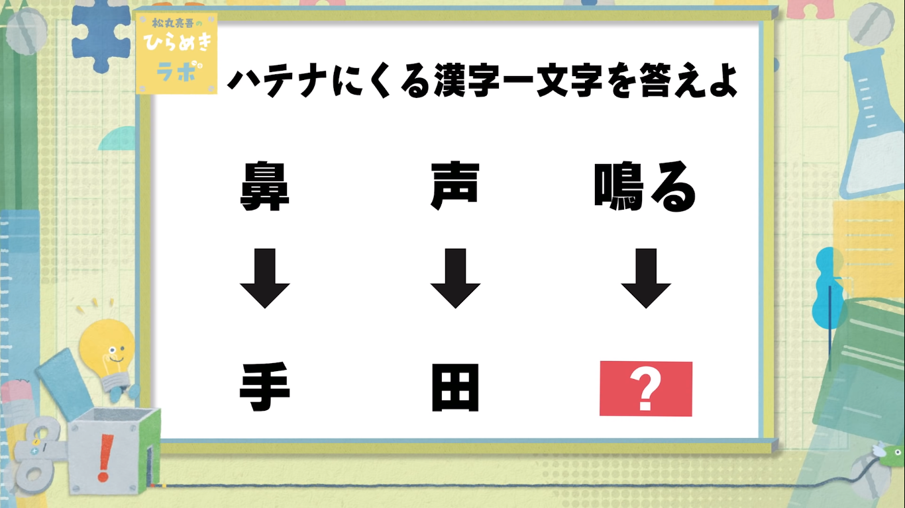

こんにちは。芝浦工業大学柏高校一年二組です。
私たちのクラスでは、謎解きを行います。
君はこの謎を解いて文化祭を満喫することが出来るのだろうか・・・あああああああああああああああああああああああああああああああああああああああああああああああああああああああああああああ
この問題は松丸亮吾さんのチャンネルを勝手にスクショして貼り付けています。無断転載です。
例題１が解けたら、以下の手順で回答してください
正解だった場合次のサイトに進むことが出来ます。
不正解だった場合はページが表示されませんので、一つ前のページに戻り再挑戦してください。
芝浦工業大学柏高等学校 42期 1年2組